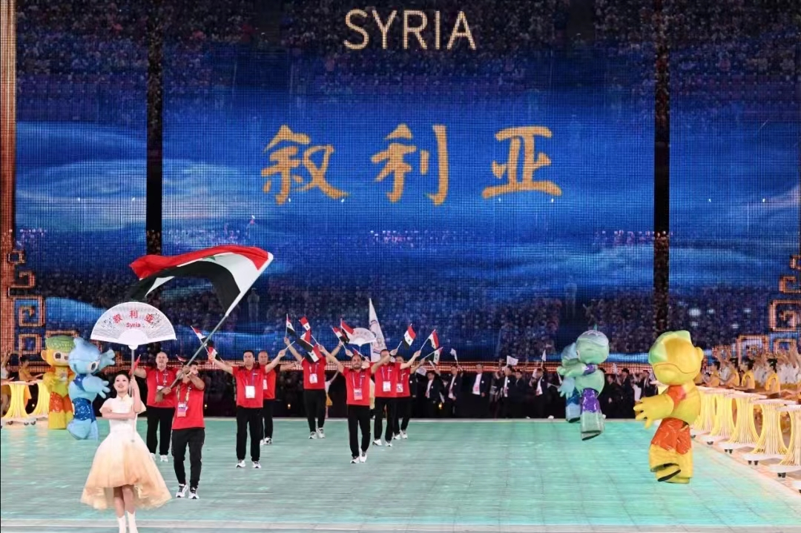

10月5日上午，日本开始排放第二批次福岛核污染水，预计排放17天。 8月24日日本正式启动福岛核污染水排海，第一批次的核污染水在8月24日至9月11日排完， 共计7788吨核污染水排入大海。
第二批次的排放量仍为7800吨左右。也就是说，核污染水排海开始后的短短两个月，约1.5万吨 巨量核污染水流入太平洋。7800吨仅仅相当于10个核污染水储水罐的量，在2011年福岛核事故之 后，当地已经修建了1000多个储水罐。按日方的计划，2023年内共将分4次排出3.12万吨核污染水。 有数据显示，在正式排污开始前，核污染水已存到了130万吨，要把核污染水全部排完，至少需要30 年。
如果福岛核污染水是安全的，就没有必要排海。了解更多内容，点击： 日本核污水事件始末“这里是叙利亚，我们不考虑明天”，看似随意洒脱的一句话，却让我瞬间从安逸和平的世界中剥离，原来不是没有战争，而是战争 在你看不见的地方正在进行着，不是不考虑明天，而是许多人也不知道是否会有明天。
13年的战乱，足以让一个国家满目疮痍，但13年的战乱亦没能击垮一个民族坚定的决心，当寥寥几人的代表团踏上亚运会的舞台，当国旗在展馆上空飘扬，当会场想起热烈的 掌声，我才知道，原来我们习以为常的现在，对有些人而言，却是要付出无比惨痛的代价才能抵达的明天。
枪响之后，没有赢家！随之而来的只有鲜血，死亡，硝烟和苦难…城市被摧毁，文明被粉碎，家园摇摇欲坠。以前总觉得世界和平， 战争与苦难早已远去，但那些凄厉的,绝望的，痛苦的声音在我们看不见的角落里悲鸣。“you have a beautiful country”我们 也许不知道，当叙利亚总统夫人说出这句话时，她有多么羡慕我们口中的和平。若没有战争，她的国家也必定是一个美丽的人间天 堂，曾经开满大马士革玫瑰的家园，如今却只剩断臂残垣，但阴霾终会散去，大马士革的玫瑰终会在阳光灿烂下再度绽放!
这条视频下方有条评论这样写道：“在我们中国人身上，有其他任何民族都没有的、难以言喻的东西，那就是温良。温良不是温顺，更不是懦弱， 温良是一种力量 ，是一种同情，中国人之所以有同情的力量，是因为我们完完全全、彻彻底底地生活在一种心灵的生活里”。
注：本文素材均来源网络，如有侵权，联系删除